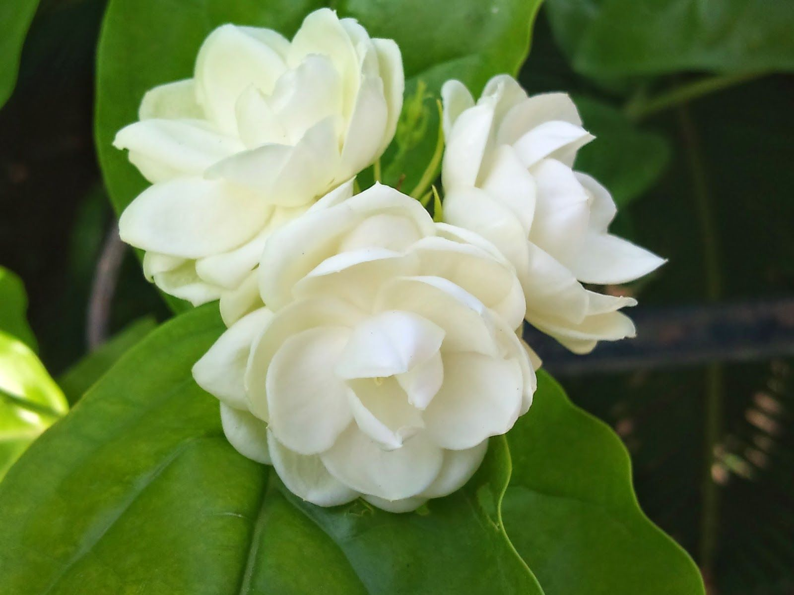
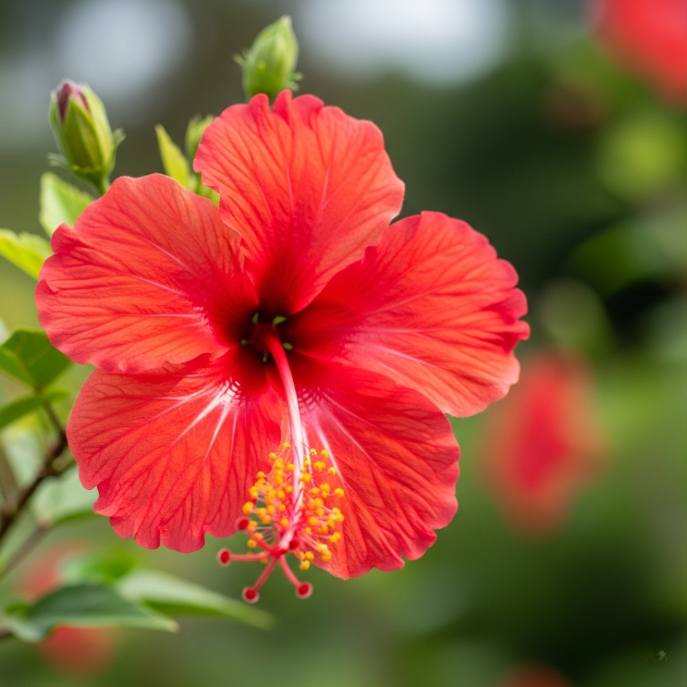
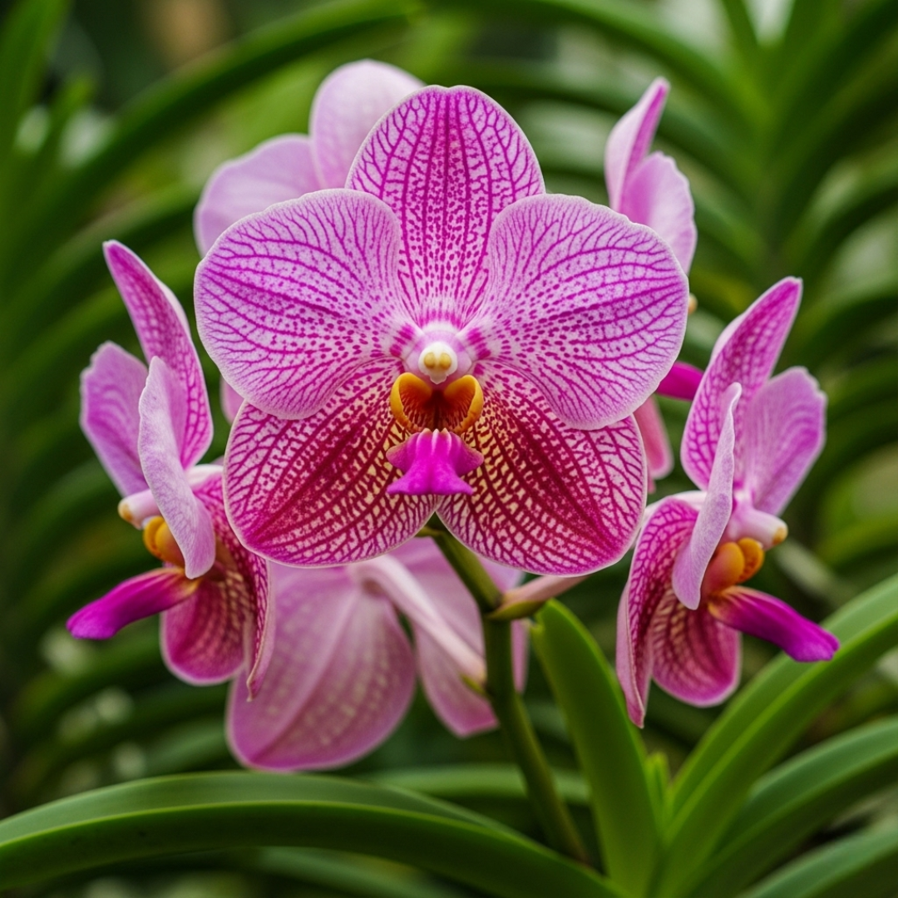
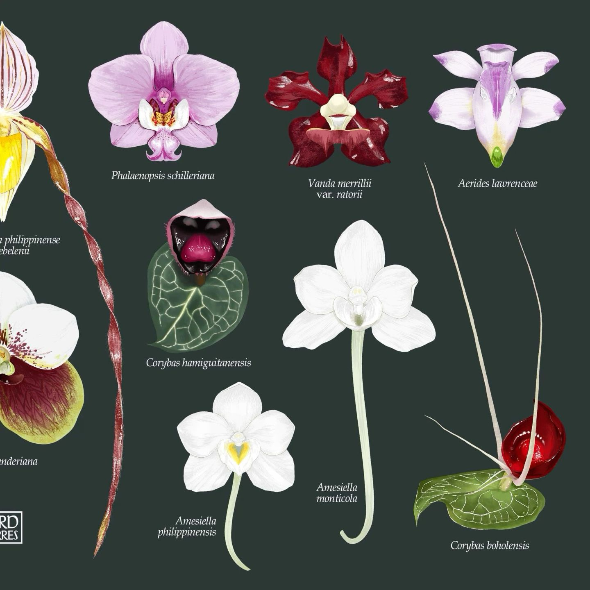
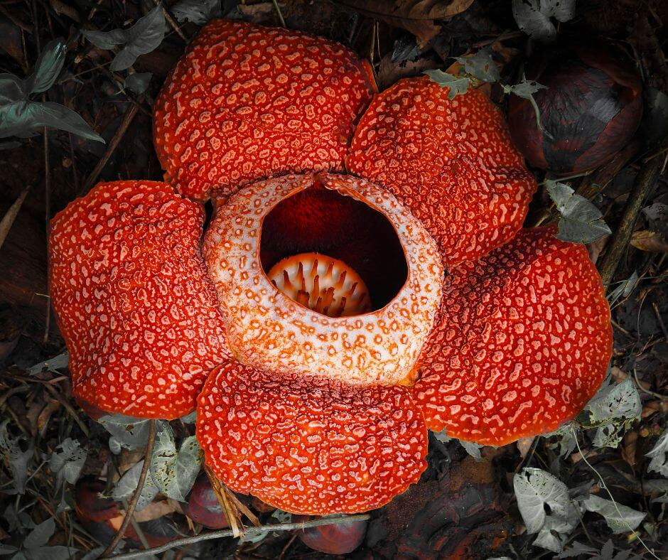
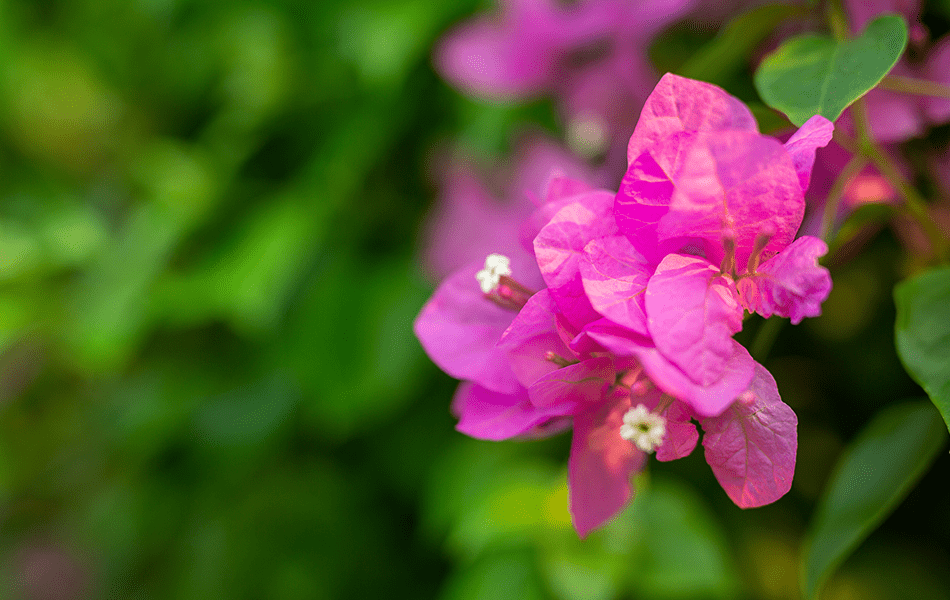
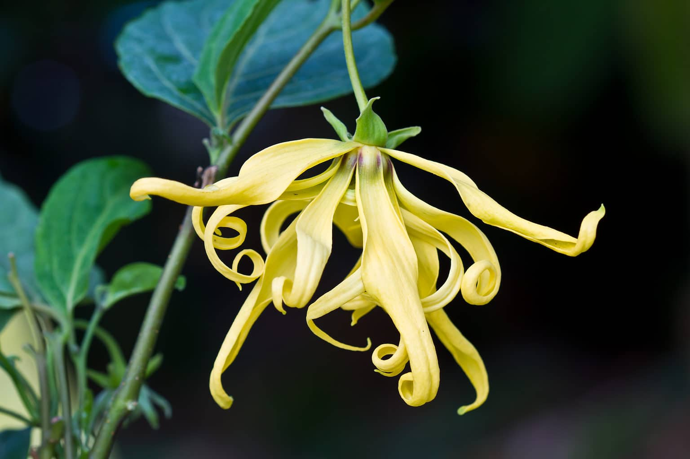
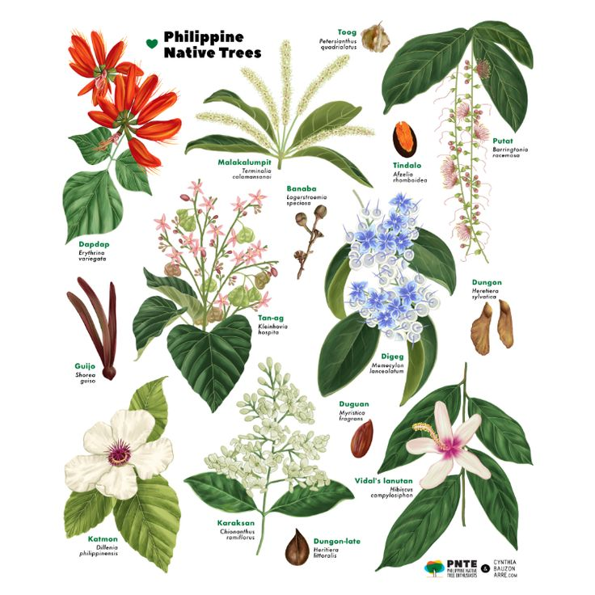
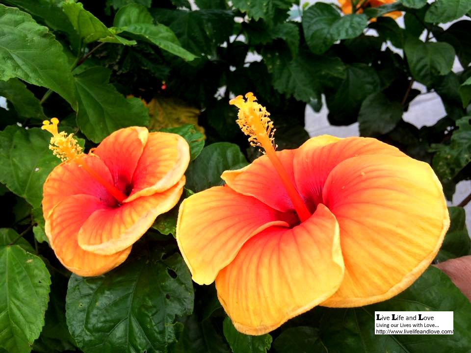
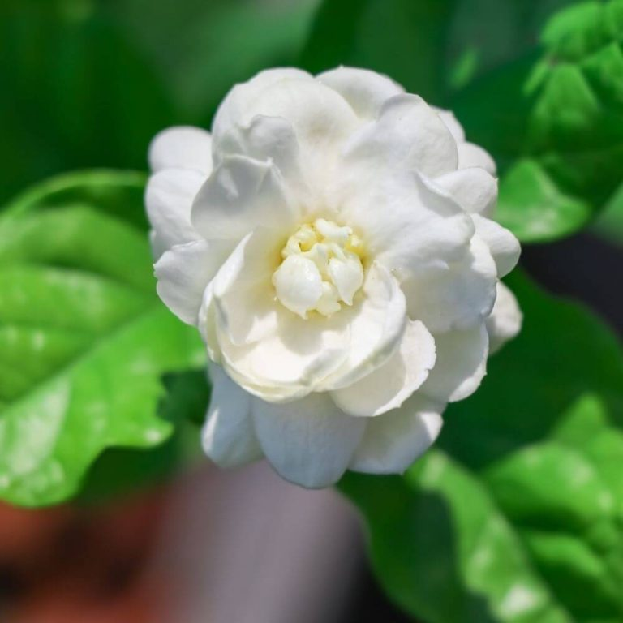

01

Sampaguita
The national flower of the Philippines, the sampaguita is a small, star-shaped white blossom with a sweet, honeyed scent. It is woven into garlands for weddings and worn in the hair as a symbol of purity and humility.
A Field Guide · The Philippine Archipelago
From the fragrant national flower to the world's largest bloom, the islands carry a remarkable collection of blossoms. Here are ten of the most beloved, each with a little of its story.

The national flower of the Philippines, the sampaguita is a small, star-shaped white blossom with a sweet, honeyed scent. It is woven into garlands for weddings and worn in the hair as a symbol of purity and humility.

Gumamela, the hibiscus, is a bold tropical bloom with large, trumpet-shaped petals in red, pink, and yellow. It thrives in the warm climate and is a common sight in gardens and along roadside verges.

Known as the "Queen of Philippine Orchids," the waling-waling is a striking epiphyte with a fan of green leaves and a dramatic plume of pink and yellow flowers. It is prized by collectors and appears on Philippine postage stamps.

Orchids are among the most diverse flowering plants on Earth, and the Philippines is home to hundreds of native species. Their intricate, often fragrant blooms make them a favorite of gardeners and botanists alike.

Rafflesia is famous for producing the world's largest single flower, a massive, maroon bloom that can reach over a meter across. It grows only in the rainforests of the region and gives off a strong, meaty odor to attract pollinators.

Bougainvillea is a hardy climbing vine covered in vivid papery bracts of pink, magenta, and orange. It is widely planted in the Philippines to cover fences and walls, adding a splash of color all year round.

Ilang-ilang is a small tree whose delicate yellow flowers release an intense, sweet fragrance. The blossoms are distilled into perfume and essential oil, making the tree a valuable crop in the southern islands.

Malacon is a tropical vine that produces clusters of small, bright flowers in shades of pink and red. It is often grown as an ornamental plant, where its cascading blooms add a cheerful touch to gardens and patios.

This second look at gumamela shows the hibiscus in a different bloom, its broad petals unfurling around a prominent central stamen. The flower is a staple of tropical landscaping across the country.

Here the sampaguita appears again, its tiny white stars clustered along the branch. The flower's gentle perfume and enduring symbolism keep it at the heart of Filipino culture and celebration.